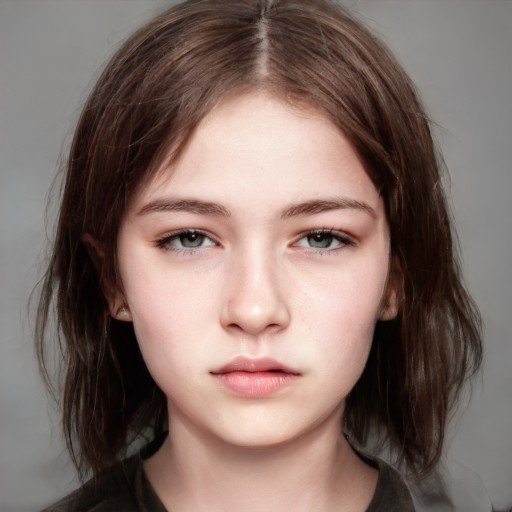

 Eve
Eve
Known Aliases: Evie, The Narrator
Age: 15
Family: Feminist scholar mother, sculptor father, nine-year-old brother Jack.
Additional Notes: Appears to hold somewhat of a position of leadership among the children. Entirely responsible for brother. Fantasizes about "disappearing." Most played songs include "Sparks" by Beach House, "Take Care" by Beach House, and "Artificial Nocturne" by Metric.
Jack
Age: 9 years old
Family: Eve’s little brother.
Additional Notes: Enjoys reading books such has Frog and Toad, George and Martha, and the children’s bible. Loves penguins. The most connected to nature and the one who truly enjoys it. Seems to take on an important leadership role among the children as their spiritual guide. Most played songs include "A Horse With No Name" by America, "Crocodile Rock" by Elton John, and "Birdhouse In Your Soul" by They Might Be Giants.
Shel
Age: 11
Family: Sister is Jen. Father struggles with rhinotillexomania. Mother currently has dental braces.
Additional Notes: Constant companion to Jack. Gentle. Loves animals. Wants to be a veterinarian. Deaf and fluent in sign language.

 Jen
Jen
Age: 16
Family: Younger brother is Shel. Father struggles with rhinotillexomania. Mother currently has dental braces.
Additional Notes: Appears to use physical intimacy as a coping mechanism to deal with low self-worth. Likes babies. Most played songs include "Fuck It and Whatever" by The Echo-Friendly, "God is a Woman" by Ariana Grande, and "Truth Hurts" by Lizzo.
Lorenzo
Known Aliases: Low, Banana-Breath
Age: 17
Family: Short adoptive father
Additional Notes: Adopted from Kazakhstan. Enjoys the culture of the 1960s and 1970s. Outdated fashion. Most played songs include "Picture Book" by The Kinks, "Good Vibrations" by The Beach Boys, and "Gimme Shelter" by The Rolling Stones.
David
Age: 16
Family:Sisters Kay and Amy (twins, conceived via IVF)
Additional Notes: Very interested in computers and coding. Most played songs include "A Real Hero" by Electric Youth and College, "Harder Better Faster Stronger" by Daft Punk, and "Weapon of Choice" by Fatboy Slim.

 Val
Val
Age: Unknown
Family: Unknown
Additional Notes: Country girl. A climber. “Clicks” with Burl
Sukey
Age: 16
Family: Pregnant Mother, newborn sister
Additional Notes: Feminist, smart, blunt. Full-ride offer to Brown U. Most played songs include "Bad Guy" by Billie Eilish, "Heaven" by Beyoncé, and "Are You Satisfied" by Marina and the Diamonds.
Rafe
Age: 15
Additional Notes: “Out and Proud.” Arsonist. Cows depress him. Most played songs include "Burning Pile" by Mother Mother, "Born This Way" by Lady Gaga, and "BOOGIE" by BROCKHAMPTON.


 Justin
Justin
Known Aliases: Juicy
Age: 13
Family: Film director father
Aditional Notes: Homophobic. Spits and drools a lot. Father owns a mansion in Rye (Westchester County). Most played songs include "Money That's What I Want" by Barrett Strong, "Beamin'" by Quadeca, and "SICKO MODE" by Travis Scott.
Terry
Known Aliases: Terry, the Parent Whisperer
Age: Unknown
Family: Mother, gynecologist and father, unknown.
Additional Notes: Often the children’s delegate to the parents; speaks to them with a proper and stern tone. Considers himself to be a master of words, a wordsmith. Most played songs include "Cello Suite No. 1 in G Major: 1. Prelude" by Johann Sebastian Bach, "Sunday Bloody Sunday" by U2, and "Put Your Head On My Shoulder" by Paul Anka.
Dee
Age: 15
Family: Mom is an architect.
Additional Notes: Passive aggressive towards the other children. Described by others as having borderline personality disorder. Known germophobe. Most played songs include "Heat Waves" by Glass Animals, "Easy On Me" by Adele, and "It'll Be Okay" by Shawn Mendes.

 Alycia
Alycia
Age: 17
Family: Cheating father, aloof mother
Additional notes: Likes older men. Eating disorder. Already a freshman in college. Party girl. Most played songs include "Pursuit of Happiness" by Kid Cudi, "Off to the Races" Lana Del Rey, and "Alien Blues" by Vundabar.
Kay
Known Aliases: IVF Twin
Age: 11
Family: Brother David, twin Amy
Additional Notes: Brat. Hit Amy over the head with a rock. Might have eaten rats during the flood. Most played songs include "I Can't Decide" by Scissor Sisters, "My Ordinary Life" by The Living Tombstone, and "Twisted" by MISSIO.
Amy
Known Aliases: IVF Twin
Age: 11
Family: Brother David, twin Kay
Additional Notes: Brat. Weaker than Kay and scared of her. Most played songs include "Survivor" by 2WEI and Edda Hayes, "Crazy" by 2WEI and Marvin Brooks, and "Darkside" by Grandson.

 Mattie
Mattie
Known Aliases: Trail Angel
Age: 31
Family: Darla, John, and Luca
Additional Notes: Professional biologist. Tortured by the Governor. Joins the group of Angels on the trail during the storm for protection. Most played songs include "Folsom Prison Blues" by Johnny Cash, "Green, Green Grass of Home" by Bobby Bare, and "Homeward Bound" by Simon and Garfunkel.
Darla
Known Aliases: Trail Angel
Age: 39
Family: Mattie, John, and Luca
Additional Notes: Falls into the category of a stereotypical hippie. Has been known to teach classes in various forms of art. Used to be a devoted Catholic. Most played songs include "Turn! Turn! Turn! (To Everything There Is a Season)" by the Byrds, "Green Tambourine" by The Lemon Pipers, and "Dedicated To The One I Love" by The Mamas and The Papas.
John
Known Aliases: Trail Angel
Age: 40
Family: Mattie, Darla, and Luca
Additional Notes: Former sous-chef.


 Luca
Luca
Known Aliases: Trail Angel
Age: 33
Family: Mattie, Darla, and John
Additional Notes: Trained as EMT and has vast medical knowledge. Serves as group doctor. Most played songs include "Black Dog" by Led Zeppelin, "N.I.B." by Black Sabbath, and "Don't Fear the Reaper" by Blue Öyster Cult.
The Militia
Frontman: The Governor
Additional Notes: Violent. Took over the farm and held children hostage. “Dealt with” by The Owner.
The Owner

 Yatch Kids
Yatch Kids
Known Aliases: None
Age: Teenagers
Additional Notes: Lavish lifestyle. Do not seem to give a care in the world about their surroundings. Some consider them to lack self-awareness. Known for showing off their high-class life. Smoke marijuana strain called The Oracle.
The Parents
Age: Middle Aged
Family: All the children
Additional Notes: Not concerned about their children’s wellbeing and safety on this trip; more worried about the party scene that they dive head first into. Most played songs include "Beat on the Brat" by the Ramones, "Reelin' in the Years" by Steely Dan, and "Don't Bring Me Down" by Electric Light Orchestra.
Burl
Age: 35
Additional Notes: Works as a groundskeeper for the Owner. Knowledgeable handyman and horticulturist. Most played songs include "Rocky Mountain High" by John Denver, "Baba O'Riley" by The Who, and "Take it Easy" by the Eagles.